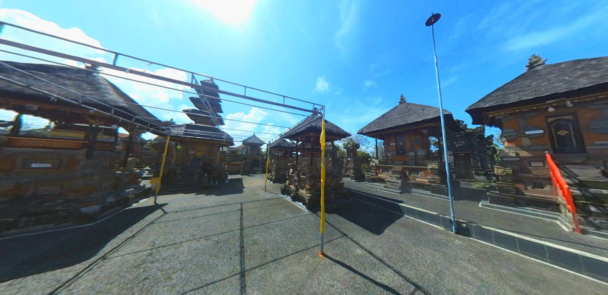

Areal Pura

Areal Pura yang dimana terletak pada bagian utara puri merupakan pusat persembahyangan utama bagi keluarga besar puri, termasuk pengelingsir (pemimpin) dan putra mahkota, serta menjadi titik kumpul spiritual bagi seluruh keturunan I Gusti Ngurah Djelantik yang tersebar di berbagai wilayah.
Di dalam Pura terdapat puluhan bangunan suci (pelinggih) yang berfungsi sebagai pesimpangan atau representasi dari pura-pura Kahyangan Jagat yang utama di Bali, seperti Pura Besakih, Pura Batur, Pura Batukaru, dan Pura Lempuyang. Selain itu, terdapat juga berbagai pelinggih penting lainnya seperti Surian Taksu, Ratu Taksu, Ratu Rambut Sedana, Ratu Niang Sakti, hingga Gedong Betel. Terdapat pula area khusus untuk para pendeta Brahmana yang disebut Kayangan Brahmana, lengkap dengan Padmasana tiga rong
Kunjungi Virtual Tour